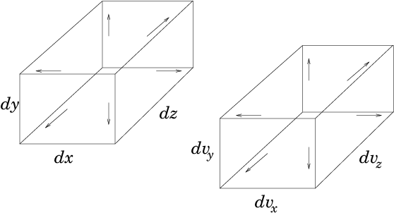
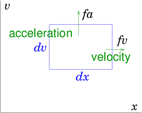
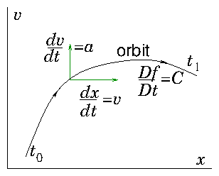
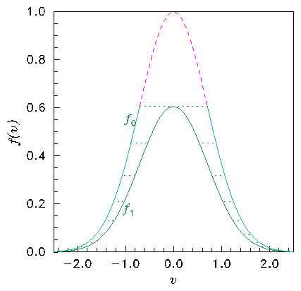
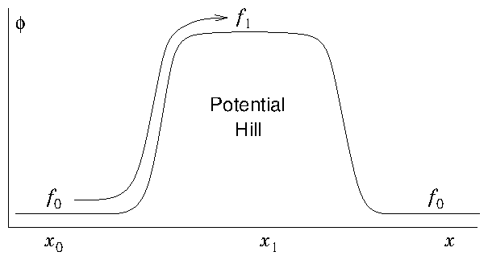
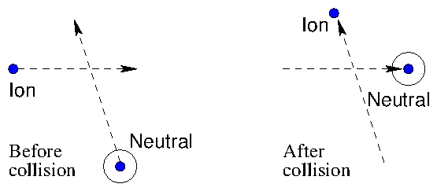
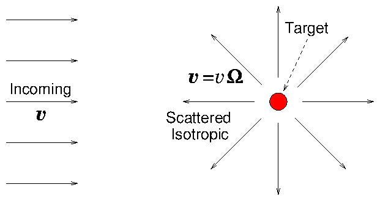
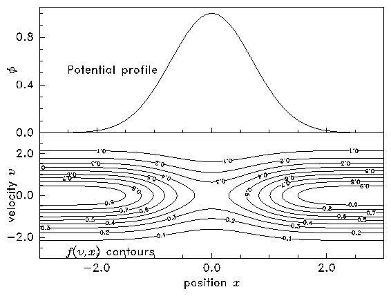
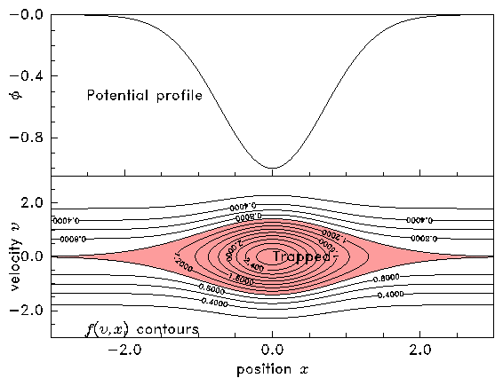

So far in our discussion of multidimensional problems we have been
focussing on continuum fluids governed by partial differential
equations. Despite the fact that treating fluids as continua seems
entirely natural, and gives remarkably accurate representation in many
cases, we know that fluids in nature are not continuous. They are made
up of individual molecules. A continuum
representation is expected to work well only when the molecules
experience collisions on a time and space scale much shorter than
those of interest to our situation. By contrast, when the collision
mean-free-path is either an
important part of the problem, as it is, for example, when calculating
the viscosity of a fluid, or when the collision mean-free-path (or
time) is long compared with the typical scales of the problem, as it
is for very dilute gases and for many plasmas, a fluid treatment
cannot cope. We then need to represent the discrete molecular nature
of the substance as well as its collective behavior.
Even so, it is unrealistic in most problems to suppose that we can
follow the detailed dynamics of each individual molecule. There are
p/kT=105(Pa)/[1.38×10−23(J/K)×273( K)]=2.65×1025 molecules, for example, in a cubic meter of
gas at atmospheric pressure and 0 degrees C temperature (STP). Even
computers of the distant future are not going to track every particle
in such an assembly. Instead a statistical description is used. The treatment is common to many
different types of particles. The particles under consideration might
be neutrons in a fission reactor, neutral molecules of a gas,
electrons of a plasma, and so on.
8.1 The Distribution Function
Consider a volume element small compared with the size of the problem
but still large enough to contain very many particles. The element is
cuboidal d3x=dx.dy.dz with sides dx, see Fig. 8.1. It is located at the
position x. We want a sufficient description of the average
properties of the particles in this element.

Figure 8.1: The phase-space element is six-dimensional and selects
particles that lie in a space element d3x and simultaneously in
a velocity element d3v.
We use a statistical description originally invented by James Clerk
Maxwell called the "distribution function". The distribution
function is a quantity f(v,x,t) that is a function of
velocity v, position x, and time t. The distribution
function is defined by considering an element in
velocity-space d3v=dvx.dvy.dvz with
sides dv located at velocity v. Any particle whose
velocity components lie simultaneously in the ranges vx→vx+dvx, vy→ vy+dvy, vz → vz+dvz, is inside that
velocity element.
Then at any time t the distribution function
f(v,x,t), is such that the number of particles in the
spatial element d3x that have velocities in the velocity element
d3v is
f(v,x,t) d3v d3x.
(8.1)
The distribution function is therefore the density of particles in the
six-dimensional "phase-space" combining velocity
and space. Its utility arises from the presumption that because of the
enormous number of particles in the problem we can let the velocity
and spatial elements, that is the phase-space element d3vd3x,
become almost infinitesimally small and yet still have a large number
of particles in it. With a large number of particles, statistical
descriptions make sense. In particular, it makes sense to think of f
as a kind of continuous fluid in six dimensions. Obviously if the
phase-space element is shrunk down to a sufficiently small size, then
eventually there will be very few particles in it. The
discreteness of the particles becomes
visible and eventually there are either one or no particles in each
tiny volume. But if we can shrink the element enough that it is small
compared with the smallest scales in the problem while it still
contains a large number of particles, then we have a sufficient
statistical description if we know f everywhere, but we don't know
the coordinates of each individual particle. The most famous of all
such distribution functions is the Maxwellian, which is
f(v,x,t) = n(x,t)
⎛ ⎝
m
2πk T
⎞ ⎠
3/2
exp
⎛ ⎝
−
mv2
2kT
⎞ ⎠
.
(8.2)
Here m is the mass of the particles, T their temperature, and k
Boltzmann's constant. The squared velocity
v2=v.v=vx2+vy2+vz2 appearing in the exponential
makes the distributions in the different coordinate directions
separable
Figure 8.2: A Maxwellian distribution function in two dimensions
displayed as a perspective view of the surface f(vx,vy), with
velocities (vx,vy) normalized to the thermal velocity
√
2T/m
. This can be considered to be the proportional to
the distribution at a fixed value of vz, since the Maxwellian
is separable.
The factor
⎛ ⎝
m
2πkT
⎞ ⎠
3/2
normalizes the
distributions in the three velocity dimensions. It is equal to the
inverse of the integral of eq. (8.3) over all
velocities. Therefore the leading term n(x,t) is just the
density in space (not phase-space). It might vary with
position or time. The Maxwellian distribution is what occurs in
thermodynamic equilibrium when
there are no substantial effects driving the velocity distribution
away from its natural form. But there are many important situations
where non-thermal, that is non-Maxwellian, distributions arise.
The distribution function directly determines the mean flow
velocity, and for particles whose internal energy
is unimportant, the energy
density.
The particle flux density, which is the fluid velocity
times the fluid density, is
Γ = n v =
⌠ ⌡
v f(v,x,t) d3v.
(8.4)
The kinetic energy density, which for a
stationary fluid can be considered the density times 3/2 times the
temperature is
E =
3
2
n k T =
⌠ ⌡
1
2
m v2 f d3v.
(8.5)
When the distribution in a specific coordinate direction does not
concern us, perhaps because it is known, or because by symmetry it is
unimportant, we often reduce the number of dimensions which we
track. For example, often we might address only the x-direction
velocity, vx. In that case, we use a one-dimensional distribution
function,
fx(vx) =
⌠ ⌡
f(v) dvydvz,
(8.6)
that is the integral
of the full three dimensional distribution
over the ignorable velocity coordinates. In effect, fx(vx) picks
out a particular vx but includes all possible vy and vz. So
the number of particles in the velocity element dvx is fx(vx)dvx.
The distribution function first arose in connection with the kinetic
theory of gases. Its use is therefore often
referred to as "kinetic theory".
8.2 Conservation of Particles in Phase-Space
Boltzmann's equation governs the
conservation of particles; not just in space, which is the continuity
equation (4.5), but in
phase-space. When solved, it tells us what the distribution function
actually is. Its derivation is mathematically very much like the
derivation of the fluid continuity equation. The main complication is
that one needs to think in six dimensions! We'll usually illustrate
this thinking in a (2-dimensional) diagram, using just one space (x
as the abscissa) and one velocity (v as the ordinate) dimension.
See Fig. 8.3.

Figure 8.3: In phase-space, velocity v carries a particle in the
x-direction, acceleration carries it in the
v-direction. Particle flux out of an element dvdx arises from
the divergence of the fluxes fv and fa in the respective
directions
As time passes, particles move in phase-space. The rate of change of
x is the velocity dx/dt=v. The rate of change of velocity v is
acceleration dv/dt=a. Generally acceleration arises from force (per
particle) divided by particle mass. The force might be gravity, or
(for charged particles) electric or magnetic field. An individual
particle thus moves through the phase-space (in the xv plane of our
diagram). If we therefore consider some phase-space volume we can
write the conservation of particles within it just as we did for the
fluid continuity equation as
∂f
∂t
+ ∇ps.(f vps) =
∂f
∂t
+
∂
∂x
.(f v) +
∂
∂v
. (f a) = S .
(8.7)
Here vps is the "phase-space velocity", a six-dimensional
vector consisting of the combination of the velocity in space and the
acceleration. And ∇ps is the gradient operator in phase
space, likewise a six-dimensional vector.
vps=
⎛ ⎝
v a
⎞ ⎠
=
⎛ ⎜ ⎜ ⎜ ⎜
⎜ ⎜ ⎜ ⎝
vx
vy
vz
ax
ay
az
⎞ ⎟ ⎟ ⎟ ⎟
⎟ ⎟ ⎟ ⎠
, and ∇ps=
⎛ ⎝
∇
∇v
⎞ ⎠
=
⎛ ⎜ ⎜
⎜ ⎝
∂
∂x
∂
∂v
⎞ ⎟ ⎟
⎟ ⎠
=
⎛ ⎜ ⎜ ⎜ ⎜
⎜ ⎜ ⎜ ⎝
∂/∂x
∂/∂y
∂/∂z
∂/∂vx
∂/∂vy
∂/∂vz
⎞ ⎟ ⎟ ⎟ ⎟
⎟ ⎟ ⎟ ⎠
.
(8.8)
The notation most usually used is to write out the space and velocity
parts of the derivatives separately.
∂
∂x
. (fv) =
∂(f vx)
∂x
+
∂(f vy)
∂y
+
∂(f vz)
∂z
(8.9)
and
∂
∂v
. (f a) =
∂(f ax)
∂vx
+
∂(f ay)
∂vy
+
∂(f az)
∂vz
.
(8.10)
This helps us remember we are dealing with phase-space. Equation
(8.7) expresses the fact that the rate of change of
number particles in a phase-space element is equal to the rate at
which they are flowing inward across its boundary plus the combined
source rate inside the element, S (all per unit volume). Particles
flow across the boundary either by moving in space across the boundary
of d3x, or by accelerating (moving in velocity-space) across the
boundary of d3v.
A final simplification arises in eq. (8.7) because of
what a partial derivative means. It means take the derivative
keeping all the other phase-space coordinates constant. In
other words, the partial x-derivative holds y,z,vx,vy,vz
constant. The partial derivative of any vj with respect to any
xk is therefore zero, which means that in the spatial divergence
eq. (8.9) the velocity factors can be taken
outside the spatial derivatives to write
∂
∂x
.(f v) = v.
∂ f
∂x
= vx
∂f
∂x
+ vy
∂f
∂y
+ vz
∂f
∂z
.
(8.11)
That rearrangement is always possible. If the acceleration of a
particle does not depend on its velocity (or depends on it in such a
way that ∇v.a=0, which is the case for the Lorentz
force) then we can do the same for the acceleration term.
Then we arrive at Boltzmann's equation
∂f
∂t
+ v.
∂f
∂ x
+ a.
∂f
∂v
= S = C.
(8.12)
The source term on the right hand side of Boltzmann's equation
contains not only literal creation or
destruction of particles (e.g. by chemical or nuclear reactions), but
also any instantaneous changes of velocity, in other words
collisions. A collision that does not destroy
or create a particle of the type we are tracking can nevertheless
change its velocity abruptly45. This change in
velocity immediately transports the particle from one velocity to
another. The particle jumps to a different position in
phase-space. That constitutes a "sink" at the old velocity and a
"source" at the new velocity. Chemical or nuclear reactions also
occur as a result of collisions, of course. Consequently essentially
all the phenomena that contribute to the Boltzmann equation's source
(with the exception of spontaneous - e.g. radioactive - decay of
the particles) are collisions; and the source term is usually called
the "collision" term and written C instead of S.
The collision term C(v,x,t) is the rate per unit
phase-space-volume of generation (or removal if it is negative) of
particles at position x having velocity v. It
naturally depends also upon the distribution function f itself. For
example the rate per unit volume at which collisions occur removing
particles of a certain velocity is proportional to the number of such
particles present in the first place.
8.3 Solving the Hyperbolic Boltzmann Equation
8.3.1 Integration along orbits
If we know the collision term C, as well as a, then clearly
Boltzmann's equation is a first-order linear partial differential
equation (in seven total dimensions including time, or less if there
are ignorable coordinates). Since it is first order linear with a
single scalar dependent variable46, f, it is hyperbolic. That means
we may solve it as an initial value problem.
The most natural way to do this is to follow particle
trajectories in phase-space, which we will call
particle orbits. Any individual particle moves in accordance with
d x
d t
= v,
d v
d t
= a; i.e.
d
d t
⎛ ⎝
x v
⎞ ⎠
=
⎛ ⎝
v a
⎞ ⎠
(8.13)
This is an ordinary differential equation, which we know how to solve
(assuming a is known), starting from some initial position in
phase-space x0, v0. But how does this orbit help us to
solve Boltzmann's equation for the distribution function? It helps us
because Boltzmann's equation is an equation for the rate of change of
f moving along a particle phase-space orbit.
Suppose we catch a six-dimensional ride on one of the particles and
move with it, looking out into the phase-space near to us and
measuring the particle density there; watching it change as time goes
by. The rate of change of the distribution function will be precisely
that given by the left hand side of Boltzmann's equation. See Fig. 8.4 for a visualization.

Figure 8.4: A phase-space orbit is determined by a first order ordinary
differential equation. The Boltzmann equation states that the rate
of change of the distribution function along phase-space orbits is
equal to the collision term.
First let's convince ourselves that is true. If, during our ride, we
measure the difference in f between times different by a small
interval dt. The f will be different because (1) it may have
intrinsic variation with time, resulting in a change dt ∂f/ ∂t; (2) it may have variation with space so our motion has
carried us a distance dt v, to a place where f is different
by dt v.∂f/∂x; or (3) it may have
variation with velocity so our motion in velocity space (acceleration)
has carried us a velocity-"distance", dt a, to where f is
different by dt a.∂f/∂v. The total of
these three, divided by dt, is the rate of change of f along the
orbit. That's the left hand side of eq. (8.12).
Second, why is this identity with the total derivative the case? It is
because the flow in phase-space isdivergenceless,
∇ps.vps=0. Just as for an ordinary
three-dimensional fluid for which ∇.(ρv) = v.∇ρ if ∇.v=0, implying Dρ/Dt=S,
similarly for a dimensionless flow in phase-space. The phase-space
flow is divergenceless if the acceleration has the requisite property
∇v.a=0. This can be interpreted as a statement that
there is no dissipation.
Third, how does this identity help us? It reduces Boltzmann's
equation to an ordinary differential equation along the
orbits. Writing the total differential as D/Dt it becomes
∂f
∂t
+ v.
∂f
∂ x
+ a.
∂f
∂v
=
Df
Dt
= C.
(8.14)
We can integrate the second equality immediately to obtain:
f(v1,x1,t1) − f(v0,x0,t0) =
⌠ ⌡
1
0
C dt.
(8.15)
The integral is along the orbit, whatever
that might be in phase space, from the initial position (0) to the
final position (1). The final value of the distribution function,
measured at the final values of velocity, position, and time, is equal
to the initial value of the distribution function at the initial
values of velocity, position, and time, plus the integral of the
collision term along the orbit. The easiest case to deal with is if
there are no collisions, C=0. Then the initial and final
distribution functions are equal in value. A fact we express by
saying, in the absence of collisions, the distribution function is
"constant along orbits".
It is vital to realize that constant along orbits generally does not mean
that the distribution function is the same function of velocity at 1
as it was at 0. No, the orbital velocity has changed between
those positions. So although f has the same height, that
height does not occur at the same velocity. Fig. 8.5 illustrates this fact.

Figure 8.5: In the collisionless Boltzmann equation the distribution is
constant along orbits. The distribution (a) is different at the top
of a potential hill (b) because the speed on an orbit is smaller
(conserving energy). The distribution values f0=f(x0) and
f1=f(x1) are the same but at different velocities. Orbits have
moved the distribution along the horizontal dotted lines in (a). The
lowest velocity orbits of distribution f0 (upper dashed part) can't
reach the top of the hill where f1 is, and do not contribute to
it.
8.3.2 Orbits are Characteristics
Every hyperbolic partial differential equation can be analysed in a
manner equivalent to the integration along orbits. This approach is
called the method of characteristics. The
terminology "characteristic" is the
general term for what we've called in the context of the Boltzmann
equation an "orbit". Suppose we have a first order linear equation,
an advection equation with source
v.
∂
∂x
ψ = S,
(8.16)
in which the components of the N-dimensional vector v are
simply known functions of ψ and the N-dimensional independent
variables x. Introduce a new parameter t which is going to
serve like time. (If the original equation already contained time as
one of the independent variables, treat it just as one component of
the vector v and use the new t as a parameterization.) Think
of the v as velocities in N-dimensional space such that
dx/dt=v. Remember, in the original formulation, those
v were just the coefficients of the partial derivatives in the
respective directions. What we've done is to address the question
"what if the coefficients v were velocities?" in respect of
the new t parameter we introduced. The answer is that starting from
any point x we would move with the velocity v and
thereby trace out an orbit in the x-space. This orbit is what
is called the characteristic of the differential equation. As we
follow the characteristic, the equation we would be satisfying would
be
v.
∂
∂x
ψ =
d x
dt
.
∂
∂x
ψ =
N ∑ j=1
d xj
dt
.
∂
∂xj
ψ =
d ψ
dt
⎢ ⎢
orbit
=S.
(8.17)
This equation is an ordinary differential equation along the
characteristic and can be integrated as ψ1−ψ0 = ∫01 Sdt. This process is exactly what we did for Boltzmann's equation. The
only difference is that Boltzmann's equation already contained
time. Fortunately the coefficient of
∂
∂t
in
Boltzmann's equation is 1. Therefore it was possible to choose the
time-like parameter to be actual physical time, which we did. We
could however have made a different choice, if we'd preferred. We
also used notation familiar from fluid theory for the "convective"
derivative D/Dt, but that is no different from d/dt along the
orbit.
Higher order scalar equations can be rendered into first order,
vector (multiple dependent variable) equations, as we saw
before. If they are hyperbolic, then they have characteristics which
correspond to the coefficients of the eigenvectors of the
equations. Those eigenvectors must be real
otherwise the presumption that there are real characteristics breaks
down. The condition, therefore, for a system of vector equations to be
hyperbolic is that they are diagonalizable with real
eigenvectors.
8.4 Collision Term
The importance of the Boltzmann equation's collision term depends upon the
application. In some plasma and gravitational applications it can be
completely neglected and ignored. Collisions are nothing. Then the
equation of interest is called the Vlasov equation.
∂f
∂t
+ v.
∂f
∂ x
+ a.
∂f
∂v
= 0.
(8.18)
At the other extreme, when applied forces are negligible so a=0,
and the problem is homogeneous and steady state
∂/∂x=0, ∂/∂t=0, all that is
left of the Boltzmann equation is C=0. So then collisions are everything!
Also, the form of the collision term depends upon
application. Especially it depends upon whether the important
collisions are with the same particles or with some particles of a
different type that are described by a different distribution
function.
8.4.1 Self-scattering
Self-scattering dominates, for example, a
simple unreactive monatomic gas. There is just one species of
particle. And elastic self-scattering is the
only type of collision present. Then the integrals over all velocity
space of C, vC, and v2C are zero. That is a simple
consequence of particle, momentum, and energy conservation. With
self-scattering, though, other complications are severe. The rate at
which collisions take place depends upon a product
f(v1)f(v2) of the distribution functions of the two
colliding particles of different velocities (so it is non-linear). It
is multiplied by the collision rate, which is the cross-section (a
function of relative speed) times the relative speed
σ|v1−v2|. It is then integrated over the velocity
v2 of the target particle (so Boltzmann's equation becomes an
integro-differential equation). Generally
substantial approximation is necessary to make the collision term
managable, even for numerical solution.
8.4.2 No self-scattering
If, however, the dominant interactions are with a different type of
particle, then momentum and energy of the first species is not
necessarily conserved. It can be transferred to the second
species. But at least the collision term
is linear in f, and if the initial velocity distribution of the
second species is known or may be neglected, then substantial
reduction of the need for integration can occur.
For example, as illustrated in Fig. 8.6, a form of
collision term that approximately represents
charge-exchange collisions at a fixed rate
ν between singly charged ions (the species whose Boltzman equation we
are trying to solve) and neutrals of the same element (the target
species 2) is
C(f) = −νf(v) +νf2(v).
(8.19)

Figure 8.6: Charge exchange collisions, where an electron is
transferred from a neutral to an ion, give rise to a simple
collision term. If they occur at a constant rate, ν, eq. 8.19 applies.
This is sometimes called the BGK collision
form. It represents depletion of the original ions at rate ν
giving the term −νf(v), and their direct replacement at the same
rate by new ions. The newly born ions, before their collision, were
neutrals. They retain the velocity distribution f2(v) they had
before the collision, because the collision just transfers an electron
from one to the other.
Another idealized example (Fig. 8.7) is when collisions
are with heavy stationary targets (which
therefore acquire negligible recoil energy) which happen to scatter equally,
isotropically, in all directions.

Figure 8.7: Isotropic scattering (an idealized approximation) gives
particles emerging equally in all directions Ω. With heavy
targets, v is not changed in magnitude, only in direction. Eq. (8.20) is the result.
In a collision, a particle
just changes the direction of its velocity, not its magnitude.
If the density of targets is n2 and the collision cross-section is
σ, then
C(f) = −n2 σv
⎛ ⎝
f(v) −
⌠ ⌡
f(v)d2Ω/4π
⎞ ⎠
.
(8.20)
Here d2Ω = sinθdθdχ is the
element of solid angle, and the integral is over the angular position
(θ,χ) on the surface of the sphere in velocity space at
constant total velocity v. In other words, the second term is the
average of the distribution function over all directions, at v. This
type of collision scatters the velocity direction, thus tending to
remove any anisotropy (variation with angles θ or χ.)
It should be noticed that in these examples where self-collisions can
be ignored, the collision term generally consists of two parts. The
first is negative, the removal or "sink"
rate of particles that collide with whatever targets happen to be
present (−n2σv f in eq.8.20). The second is
positive, the "source" rate of particles
from all mechanisms. When non-reactive gases are being treated, the
source is only the re-emergence of particles from collisions. But in
other situations, such as neutron transport in a reactor, generation
of new particles from reactions or spontaneous emission from the
target medium may be equally important.
For multiple target species, j, the sink term is the sum of collisions
with all target types. And this is often written in shorthand as
−Σt×( v f), with
Σt =
∑ j
nj σj;
(8.21)
and referred to in reactor physics literature as the "macroscopic
cross-section". This terminology is
unfortunate because the quantity Σt has units m−1 not
m2, and is an inverse attenuation-length,
not a cross section. When the targets are stationary, Σt is
isotropic: the rate of collisions is independent of the direction of
particle velocity. The source term, by contrast, is not usually isotropic
because it includes the emergence of particles from pure scattering
events. Scattering, even from stationary targets, usually partially
retains any anisotropy in the distribution function itself. (The
conditions of eq. 8.20 are a non-typical idealization.)
Worked Example: Solving Vlasov's Equation
Consider a steady-state situation, one
dimensional in space and velocity, where acceleration arises only from
a spatially varying potential energy of the form ϕ(x)=ϕ0exp(−x2/w2), so a=−1/mdϕ/dx, and collisions are
negligible. If the distribution function at |x|→ ∞ is equal
to f∞(v) = exp(−m v2/2T), and ϕ0 ≥ 0, find the
distribution function f(v,x) for all x, and v. Can you solve
this problem if ϕ0 < 0?
The steady collisionless one-dimensional Boltzmann (Vlasov) equation
is
0=
D f
D t
= v.
∂f
∂ x
+ a.
∂f
∂v
(8.22)
The equations of the orbit (the characteristics)
are
d x
d t
= v;
d v
d t
=a=−
1
m
dϕ
d x
.
(8.23)
Multiplying the second of these by the first we find
v
d v
d t
+
1
m
dϕ
d x
d x
d t
=0,
(8.24)
which may be immediately integrated to find
1
2
m v2 + ϕ = const.
(8.25)
We have derived the conservation of energy, kinetic plus
potential. The constant can be considered to be the kinetic energy at
infinity, 1/2mv∞2, where the potential (ϕ∞) is zero.
For Vlasov's equation, the distribution function, f is constant
along the orbits. Therefore
If ϕ0 > 0, then no matter how small v2 is, there is a real
solution for v∞ to the conservation equation 1/2 m v2+ ϕ = 1/2 m v∞2. Therefore this expression for f
is valid for all v. The distribution is everywhere Maxwellian, but
its density varies with position. However, if ϕ0 < 0 then,
everywhere that ϕ is negative, there is a minimum speed
√
−2ϕ/m
, below which there is no real solution for
v∞. These are the trapped orbits. They do
not extend to infinity, but are reflected because they reside in the
potential well. The value of f on those trapped orbits is undefined
by the boundary condition at infinity, and must be determined
otherwise, e.g. from the initial conditions. Fig. 8.8 shows
an example solution.
(a)(b)
Figure 8.8: Contours of constant f(v,x) are also orbits. Therefore the
orbits can be plotted simply by contouring f,
whose value is determined by the total (kinetic plus potential)
energy at any point in phase-space. When the potential has a hill
(a), all orbits extend to x→ ∞ and f is determined by
boundary conditions. When the potential has a well (b), the value of
f on trapped orbits (shaded) is undetermined. [The parameters used
in these plots are ϕ0/m=±1, w=1, T/m=1.]
Exercise 8. Boltzmann's Equation.
1. Divergence of acceleration in phase-space.
(a) Prove that particles of charge q moving in a magnetic field
B and hence subject to a force qv×B,
nevertheless have ∇v.a=0.
(b) Consider a frictional force that slows particles down in
accordance with a=−Kv, where K is a constant. What is
the "velocity-divergence", of this acceleration,
∇v.a? Does this cause the distribution function f
to increase or decrease as a function of time?
2. Write down the Boltzmann equation governing the
distribution function of neutral particles of mass m in a
gravitational field
g
^
x
, moving through matter that
consists of two different species of density na, nb whose
only effects are: species a absorbs the particles with a
cross-section σa independent of speed; species b emits the
particles with a Maxwellian distribution of small temperature Tb,
by radioactive decay with a half-life tb.
Solve the equation (analytically) in uniform steady state (
∂
∂t
=
∂
∂x
=0
), in the
limit kTb << m g/naσa, to find the distribution function
fx(vx).